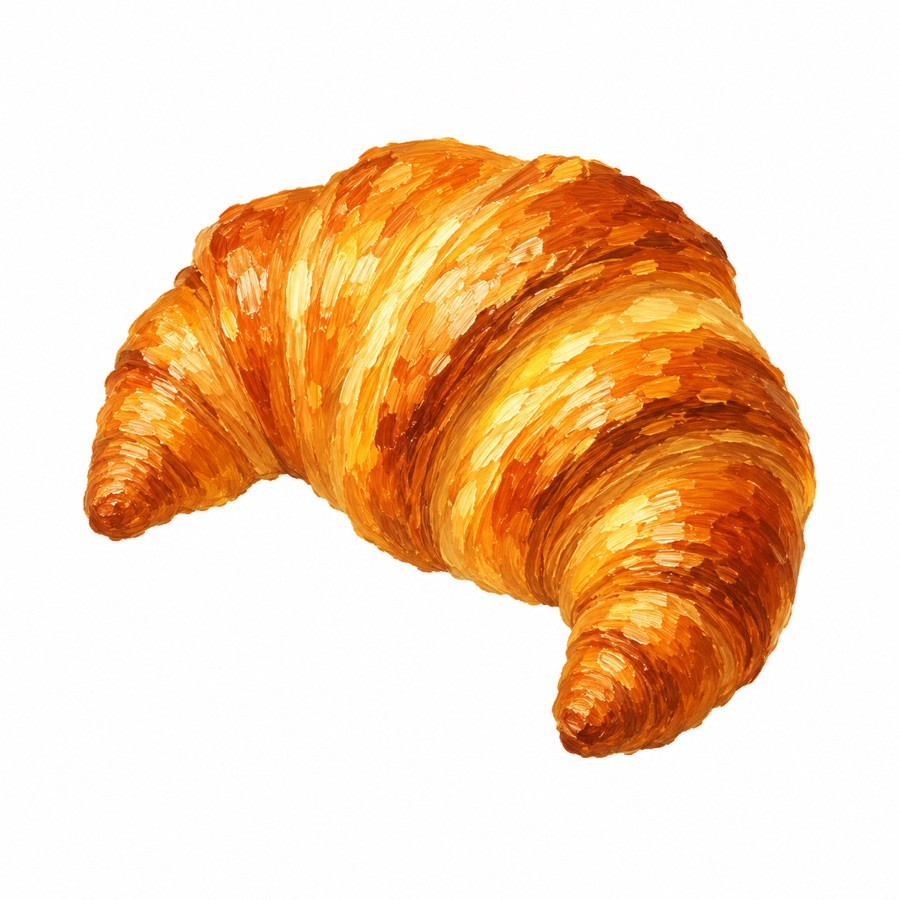

The Meilleur Croissant au Beurre du Grand Paris is run every year by the Syndicat des Boulangers du Grand Paris — the bakers' guild covering Paris and the three neighboring départements (Hauts-de-Seine, Seine-Saint-Denis, Val-de-Marne). Every entry has to use Charentes-Poitou AOP butter, and a jury judges each croissant on appearance, lamination, texture, aroma, and taste. Results are usually announced in spring, at the Fête du Pain.

Boulangerie du Sentier (2nd arrondissement)
The 2026 title went to Boulangerie du Sentier, with baker Alexia Berreby taking the win. The jury scored every entry on baking, shape and appearance, lamination/texture/tenderness, and flavor and aroma — the same four criteria used across the competition. Results were announced May 12 at the Fête du Pain. We haven't tasted it ourselves and won't pretend otherwise; below is what the coverage at the time reported, with sources linked.
This is the guild's own published ranking for the year, not a third-party tally.
A full top-10 has only been published consistently since 2024 — for 2018–2023 only the single winner is on record. There's no 2020 result: we don't know why, and rather than guess, we've simply left that year out.